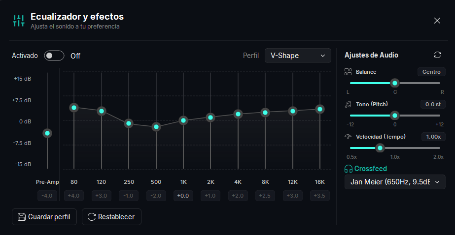
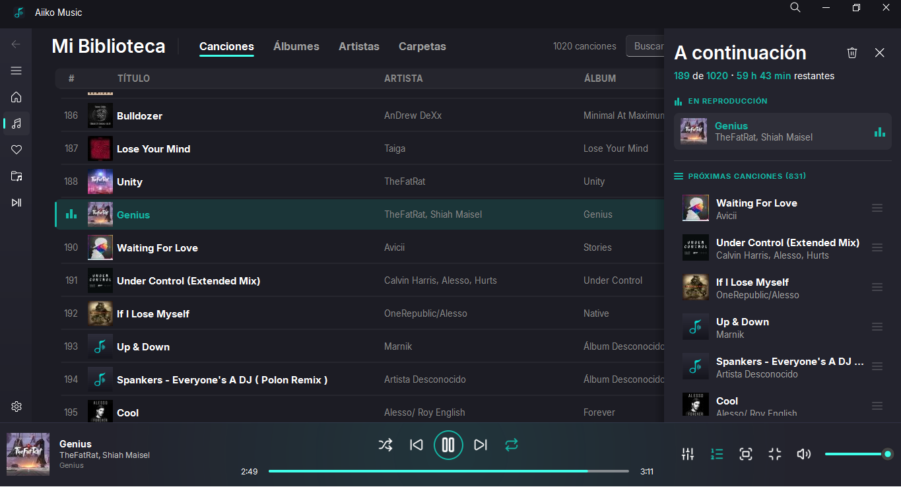
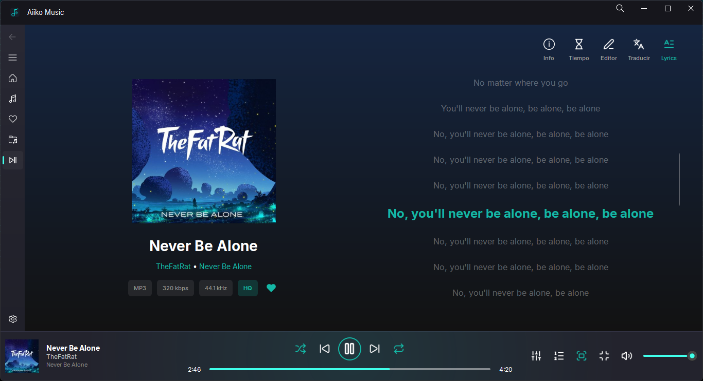
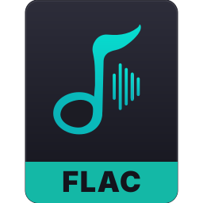
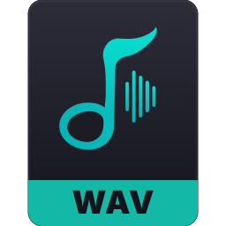
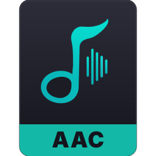

10-band equalizer with custom tuning
Adjust the sound to your preference, and use the crossfeed functions.

Aiiko Music is a local music player for Windows, designed for personal music collections. It brings together playback, albums, artists, playlists, lyrics and metadata in one place.


Aiiko Music plays the most common audio formats, including:

FLAC
WAV
AACFor Windows 10 and 11. The easiest way is to download the latest release.
Aiiko Music.exe and follow the prompts shown on first launch.If you prefer to run it from source, the instructions are in the README.